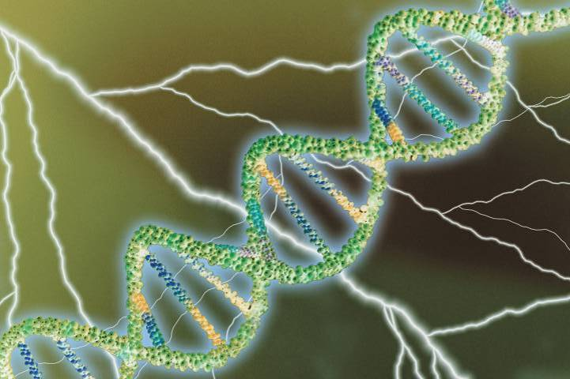
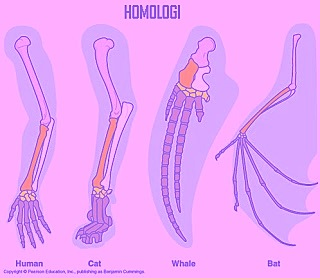

pinstripe
toolkit
intagrating transcriptomic & proteomic data
☞ why?
ncRNA vs mRNAHARD
long canonical ORF
cutoff length

Phylogenomic conservation
No Homolog?
No Data?
Other Confounders
☹ RNA editing
☹ non-cononical start codon
☹genotypic variations
Databases
Databases Gencode
Databases Gencode | RefSeq
☹ no novel genes
database accuracy?
Proteomic Data
BLAST
Lots of Work
dictionaries
coordinates
⚛Pinstripe⚛
A tool tohelp
⎈